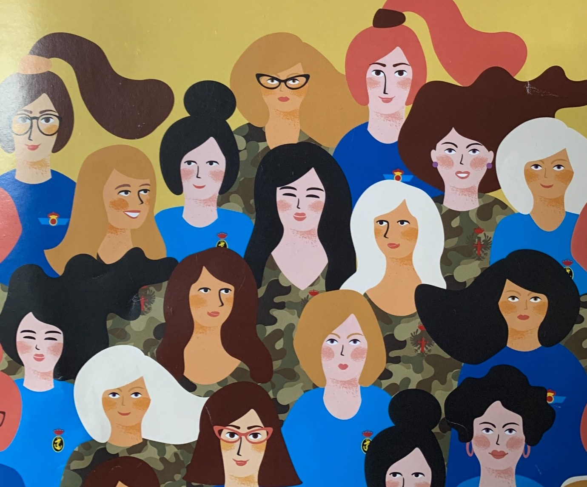
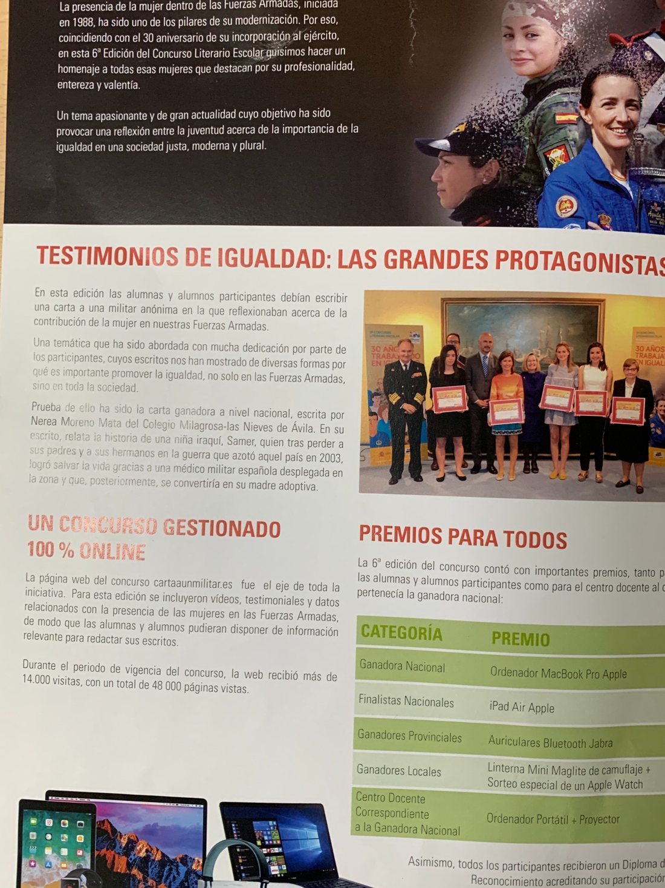
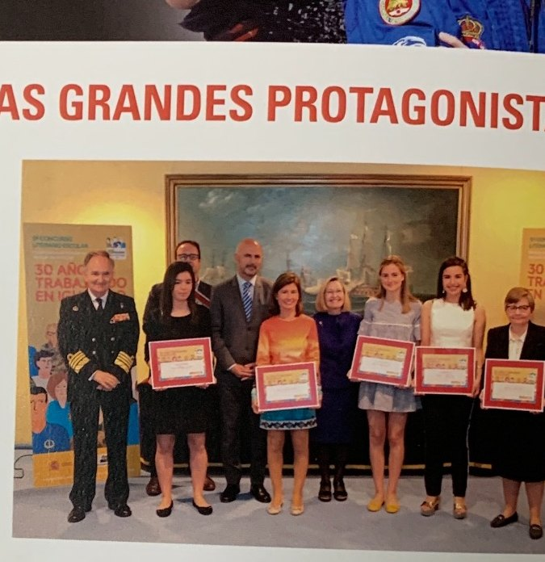

ESCUCHA
Y APRENDE.
Descubre las historias de las mujeres militares, su trabajo y los desafíos que afrontan.
El valor no siempre hace ruido. A veces se escribe en una carta. Una mirada a las mujeres que han transformado las Fuerzas Armadas.

En 1988 comenzó la incorporación de la mujer a las Fuerzas Armadas españolas. Treinta años después, el certamen dedicó su sexta edición a reconocer su papel.
El Concurso Literario Escolar «Carta a un Militar Español» invitó al alumnado a escribir a una militar anónima y a reflexionar sobre su contribución, la igualdad y el compromiso. Esta página revisita el folleto del curso 2018–19 con un lenguaje visual potente, contemporáneo y emotivo.
CONOCE LOS TESTIMONIOS ↗HAY PROFESIONES QUE SE EJERCEN.
Y OTRAS QUE TAMBIÉN SE SIENTEN.
La VI edición superó récords de participación. Detrás de las cifras hay estudiantes, docentes y centros que decidieron implicarse.
Datos históricos extraídos del folleto de la sexta edición, curso 2018–19. No corresponden a una convocatoria actual.

VOCES QUELa sexta edición homenajeó la profesionalidad, la entereza y la valentía de las mujeres militares. Sus experiencias fueron el punto de partida de miles de cartas.
El concurso propuso reflexionar sobre la igualdad en las Fuerzas Armadas y en toda la sociedad.
Las cartas de los estudiantes dieron protagonismo a las experiencias de mujeres que sirven y protegen.
El folleto describe la carrera militar como un trabajo dinámico, de formación continua, servicio y responsabilidad.
Las imágenes originales del folleto nos recuerdan el propósito de esta edición: visibilizar referentes e inspirar nuevas generaciones.
La sexta edición otorgó premios nacionales, provinciales y locales, así como reconocimientos a los centros docentes. Todos los participantes recibieron un diploma acreditativo.

Premios históricos del curso 2018–19; no representan premios de convocatorias vigentes.
En el concurso de 2018–19 el alumnado escribió una carta a una militar anónima. Estos pasos son una orientación didáctica, no las bases oficiales.
Descubre las historias de las mujeres militares, su trabajo y los desafíos que afrontan.
Piensa qué significa para ti la igualdad y qué le escribirías a una de esas mujeres.
Da forma a una carta personal, sincera y bien escrita. Revisa las indicaciones de tu docente.
El folleto anuncia una futura 7.ª edición dedicada a la contribución de las Fuerzas Armadas a la ciencia y la investigación. Esta página recrea exclusivamente la 6.ª edición.
¿Quieres practicar con un formulario de contacto? Escribe aquí tu mensaje. Es una demo académica: no envía datos a ningún servidor ni al concurso.